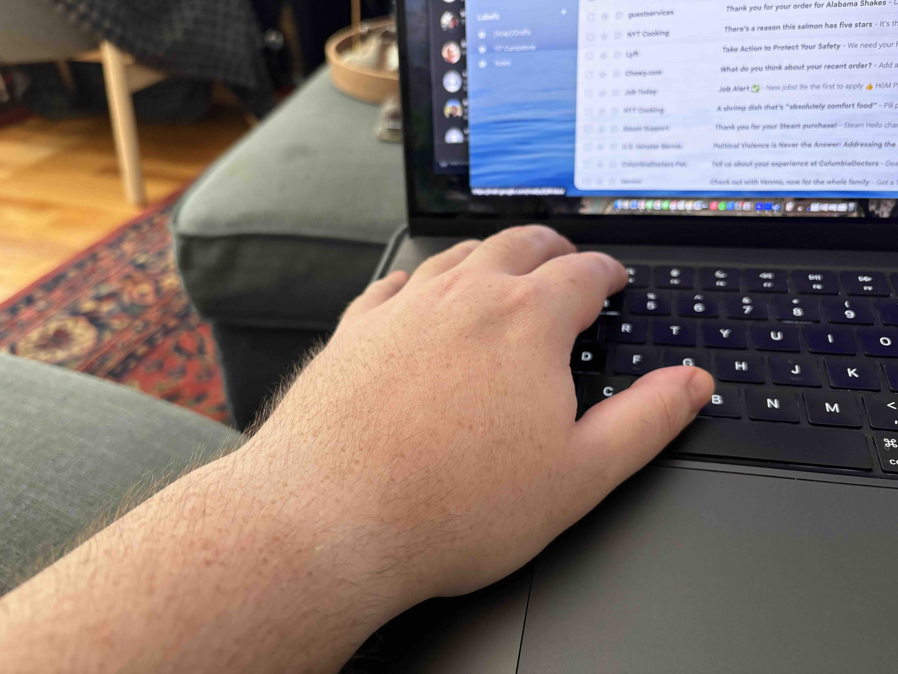
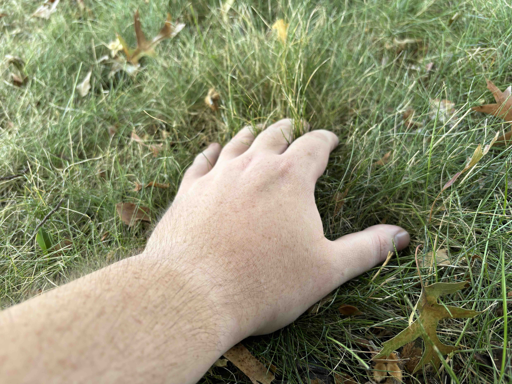

I plan to create a body of work that explores how human bodies interact and connect with the physical environment that surrounds them. In an increasingly digitized and sanitized world, how do we reconnect with the natural world? What about our modern world is helpful and healing for our bodies, and what is harmful and inhibiting?
 